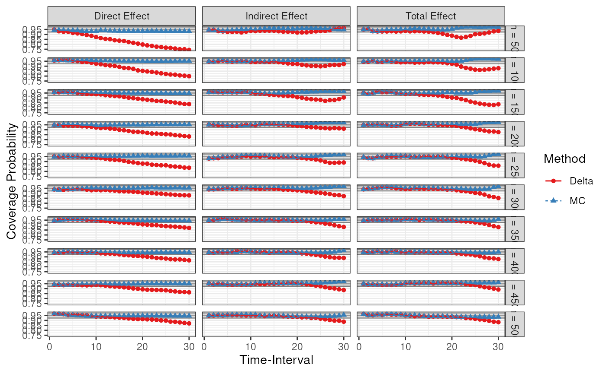
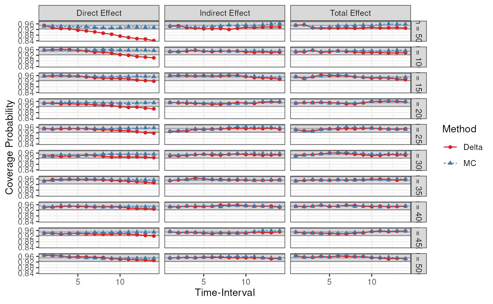
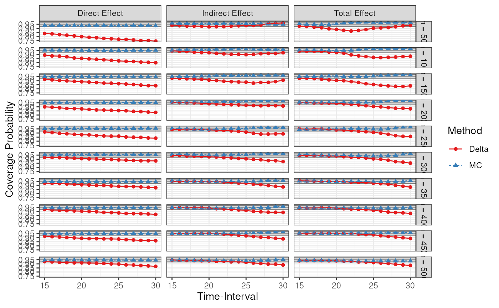

Plot Coverage Probabilities
Source:R/manCTMed-fig-scatter-plot-coverage.R
FigScatterPlotCoverage.RdCoverage probabilities for the model \(X \to M \to Y\).
Arguments
- results
Summary results data frame.
- delta_t
Vector of time-interval value. If
delta_t = NULL, use all available time-intervals- dynamics
Integer.
dynamics = 0for original drift matrix,dynamics = -1for near-neutral dynamics, anddynamics = 1for stronger damping.- std
Logical. If
std = TRUE, standardized total, direct, and indirect effects. Ifstd = FALSE, unstandardized total, direct, and indirect effects.
Examples
data(results, package = "manCTMed")
FigScatterPlotCoverage(results)

FigScatterPlotCoverage(results, delta_t = 1:14)

FigScatterPlotCoverage(results, delta_t = 15:30)
